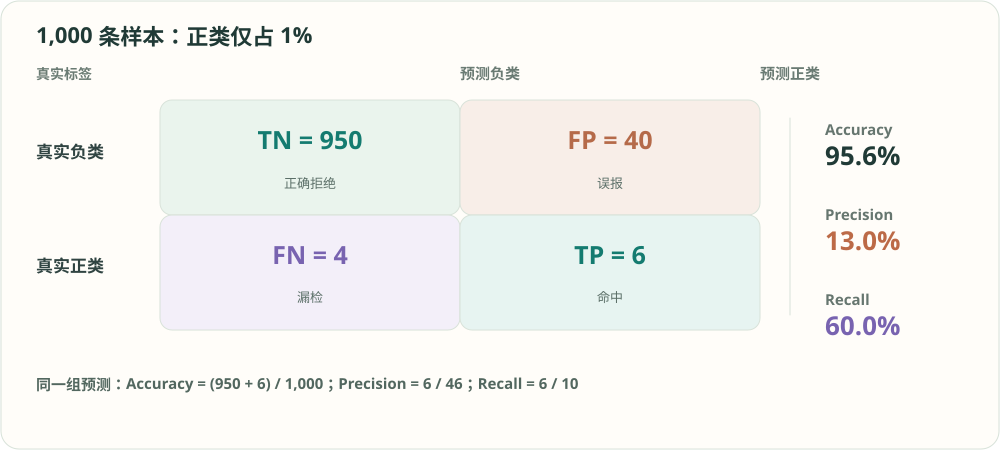
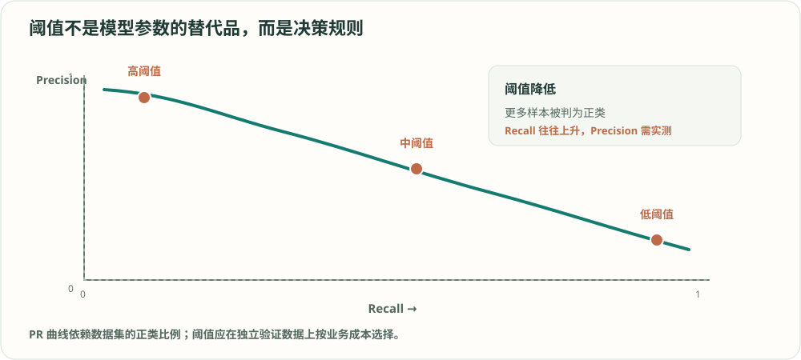
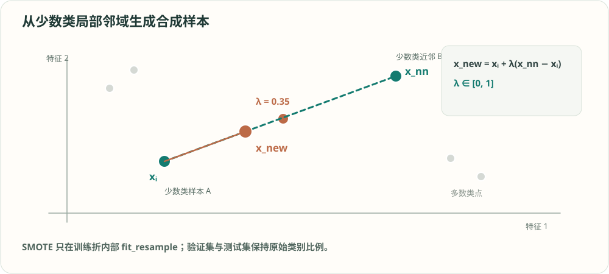

不平衡分类：从类别比例走向代价敏感决策
当正类只有百分之一，全部预测为负类也可能得到 99% 准确率。真正要设计的是漏报与误报的代价、模型排序能力、决策阈值，以及不会污染验证数据的重采样流程。
01 · 先把“少数类”放回业务损失里
类别不平衡描述的是标签频率差异，而不是模型质量的结论。欺诈、设备故障、罕见缺陷或某些筛查任务中，正类可能很少；但“少数类”并不天然等于“更重要”，也不代表数据一定需要过采样。应先明确哪种错误会造成什么后果、标签是否可靠、正类是否有足够代表性，以及模型预测发生在什么时间点。
考虑 1,000 条记录，其中 10 条为正类。模型正确识别 6 条正类、漏掉 4 条，同时把 40 条负类误报为正类，其余 950 条负类识别正确。它的准确率仍有 95.6%，但正类精确率只有 13.0%，召回率为 60%。这不是一个“好模型”的结论，而是提醒我们不能只汇报准确率。

在报告中明确正类定义、样本基数和预测单位。若同一客户贡献多条交易，按交易计算的指标与按客户聚合的指标可能回答不同问题；若标签有延迟，最近时间段的“未标记”也不等于负类。
02 · 指标：排序、阈值与错误类型要分开
二分类预测通常包含两个不同对象：模型分数或概率估计，以及把分数转换为动作的决策阈值。Precision 衡量被判为正类的样本中有多少是真的；Recall / Sensitivity 衡量全部真实正类中找到了多少；Specificity 衡量真实负类中正确拒绝了多少；Balanced Accuracy 是正类召回率与负类召回率的平均。
当正类极少时，PR 曲线往往更直接地揭示“找回多少正类需要付出多少误报”。ROC-AUC 衡量不同阈值下 TPR 与 FPR 的排序关系；在极低基率场景中，即使 FPR 看似很小，也可能产生大量假阳性。Average Precision（AP）是按召回率增量对精确率加权的汇总量，不能在所有软件与定义下都简单等同于梯形积分 PR-AUC。
不要只给一个 AP 数字。报告正类比例、测试样本数、precision/recall 工作点、混淆矩阵和阈值。若部署代价不对称，Balanced Accuracy 或 AP 也未必等于业务效用，应该定义可审计的成本函数。
03 · 阈值是一项决策，不是训练时必须固定为 0.5
假设模型输出正类分数 s(x)，当 s(x)≥t 时采取正类动作。阈值下降会让更多样本进入正类集合，召回率通常不下降，但精确率可能下降；曲线具体形状取决于分数排序与数据分布。若分数经过校准，可以用概率与成本比较；若没有校准，仍可在验证集上选择一个分数阈值，但不能把该分数冒称为真实概率。
阈值必须在训练数据之外的验证数据上选定，或通过嵌套交叉验证评估阈值选择程序。测试集只在模型、阈值和决策规则都固定后使用一次。若业务成本随样本、地区或时段不同，一个统一阈值也未必适用，且分组阈值可能引入公平性与合规问题。

04 · 随机过采样、欠采样与 SMOTE
随机过采样从少数类有放回抽样，简单但可能重复记忆样本；随机欠采样减少多数类样本，降低训练量，却可能丢失有用边界或亚群。SMOTE 的核心不是复制，而是在少数类样本与其少数类近邻之间做线性插值。设一个少数类样本为 xᵢ，一个近邻为 x_nn，随机比例 λ∈[0,1]，则：
这种插值假设局部线段仍落在有意义的少数类区域。若少数类有多个不相连子群、边界噪声很多、距离被无关特征主导，合成样本可能跨过类别边界或制造不真实样本。SMOTE 不是生成真实世界事件的概率模型。

Tomek Links 通过异类最近邻对识别类间边界附近的样本，常作为清理步骤；SMOTE-Tomek 将合成与清理结合，但不能保证边界一定变得正确。连续特征可考虑标准 SMOTE；混合类别与数值特征可评估 SMOTENC，纯类别特征则应选择相应的类别过采样方法，而不是对类别编码后的整数做任意线性插值。
05 · 重采样必须放在训练折内部
最严重的错误是先对全量数据做 SMOTE，再切分训练与测试。合成点可能使用未来测试样本作为近邻，测试分布也已被人为改变，导致评估过于乐观。正确做法是先划分训练、验证与测试数据；在每一个交叉验证训练折中拟合预处理并重采样；验证折和测试折保持原始观测分布。
对于 scikit-learn 的普通 Pipeline，重采样器并不实现标准的 transform 语义；应使用 imblearn.pipeline.Pipeline，其中 sampler 只在 fit 阶段应用。若先标准化再做近邻插值，标准化器也必须只从该训练折拟合。若是时间序列或同一实体重复出现，普通随机分层切分还可能泄漏，需要按时间或实体分组切分。
06 · 类别权重改变损失，不改变原始样本数
类别权重不合成新样本，而是在训练目标中提高某些类别错误的惩罚。常见的 balanced 权重为：
在 scikit-learn 的许多分类器中，class_weight='balanced' 会按上述频率反比构造权重。对逻辑回归，它等价于加权损失中的不同样本贡献；对树模型，权重会影响分裂或叶节点统计。XGBoost、LightGBM 等库还有各自的正类权重参数，不能把参数名和默认计算方式视为通用标准。
权重较大可能提高少数类召回率，同时牺牲精确率或概率校准。不要把“权重平衡”误解为概率输出已经代表真实部署基率。重采样、类别权重、阈值调整可以作为候选方案比较，但必须使用相同且未被重采样的验证协议。
07 · 异常检测与监督分类回答不同问题
若少数类样本极少、标签不完整或异常模式不断变化，可以评估异常检测方法，例如 Isolation Forest、Local Outlier Factor（novelty 模式）或 One-Class SVM。它们尝试描述常态区域或异常程度，而不是一定学习一个完整、稳定的“正常/欺诈”边界。
如果已有大量可靠的正类标签，监督式二分类通常能利用异常检测无法使用的类别信息。异常检测也可能把罕见但合法的群体行为标为异常。方法选择应由标签质量、异常机制、数据漂移、复核容量和漏报代价决定，而不是由类别比例单独决定。
08 · 离线实验：在原始测试分布上选择并评估阈值
下面构造一个 3% 正类的合成二分类数据集。先保留测试集，再从开发集切出训练与验证数据；标准化与 SMOTE 被封装在 imbalanced-learn Pipeline 中，阈值通过验证集上的明确错误成本选出。测试集不重采样、不参与选阈值。
import numpy as np
from sklearn.datasets import make_classification
from sklearn.model_selection import train_test_split
from sklearn.preprocessing import StandardScaler
from sklearn.linear_model import LogisticRegression
from sklearn.metrics import (
average_precision_score, balanced_accuracy_score,
precision_score, recall_score, confusion_matrix)
from imblearn.over_sampling import SMOTE
from imblearn.pipeline import Pipeline
X, y = make_classification(
n_samples=2400, n_features=12, n_informative=5,
n_redundant=2, weights=[0.97, 0.03],
class_sep=1.0, flip_y=0.002, random_state=16)
X_dev, X_test, y_dev, y_test = train_test_split(
X, y, test_size=0.2, stratify=y, random_state=16)
X_train, X_val, y_train, y_val = train_test_split(
X_dev, y_dev, test_size=0.25, stratify=y_dev, random_state=17)
model = Pipeline([
("scale", StandardScaler()),
("smote", SMOTE(k_neighbors=3, random_state=16)),
("classifier", LogisticRegression(max_iter=1500))
])
model.fit(X_train, y_train)
val_score = model.predict_proba(X_val)[:, 1]
thresholds = np.linspace(0.05, 0.95, 91)
# 业务示例：漏报成本 10，误报成本 1
costs = [
10 * np.sum((y_val == 1) & (val_score < t))
+ np.sum((y_val == 0) & (val_score >= t))
for t in thresholds
]
chosen_threshold = float(thresholds[int(np.argmin(costs))])
test_score = model.predict_proba(X_test)[:, 1]
test_pred = (test_score >= chosen_threshold).astype(int)
print("train/validation/test prevalence:",
round(y_train.mean(), 3), round(y_val.mean(), 3),
round(y_test.mean(), 3))
print("validation-selected threshold:", chosen_threshold)
print("test AP:", round(average_precision_score(y_test, test_score), 3))
print("test balanced accuracy:",
round(balanced_accuracy_score(y_test, test_pred), 3))
print("test precision/recall:",
round(precision_score(y_test, test_pred, zero_division=0), 3),
round(recall_score(y_test, test_pred, zero_division=0), 3))
print("test confusion matrix:\\n", confusion_matrix(y_test, test_pred))
assert len(test_pred) == len(y_test)
assert 0.0 <= chosen_threshold <= 1.0需要 Python 3.10+、NumPy、scikit-learn 和 imbalanced-learn。数据是合成的，输出只用于复核流程；SMOTE 改变了训练分布，分数未必校准到原始基率，因此这里通过验证集选择成本阈值，而不是宣称某个概率值有普适意义。
09 · 上线前的检查清单与来源
部署前要确认正类定义、样本基率、标签延迟、成本矩阵、阈值审批、复核吞吐量与漂移告警。上线后同时监控输入分布、分数分布、实际标签到达后的 precision/recall 和各群体误差；若标签延迟较长，先报告可观测的代理指标并注明它们不是最终质量指标。